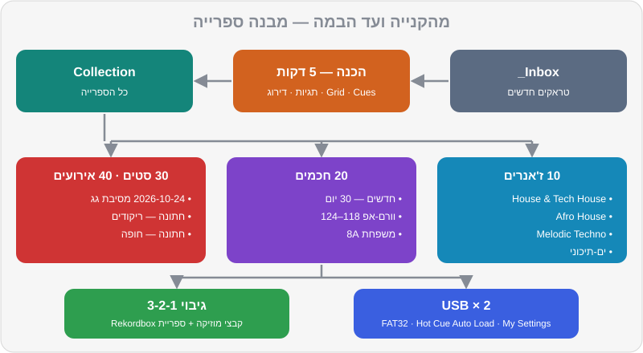

פרק 09 מתוך 20
הכנת ספרייה
Library Preparation
הסוד של DJs מקצועיים: פורמטים ואיכות, איפה קונים מוזיקה כחוק, סטרימינג בתוך Rekordbox ומגבלותיו, תגיות, דירוגים, צבעים ו-My Tag, פלייליסטים חכמים, מבנה תיקיות ושמות קבצים, גיבויים וייצוא ל-USB.
שאלו DJ מנוסה מה ההבדל בינו לבין מתחיל, ורוב הסיכויים שהוא לא יגיד "המעברים". הוא יגיד: "אני מכיר את המוזיקה שלי". באמצע סט יש לכם בערך שלוש-ארבע דקות לבחור את השיר הבא, להכין אותו ולערבב — ובזמן הזה אין מקום לגלילה אינסופית בין 3,000 קבצים בשם track_final_2.mp3. ספרייה מסודרת היא מה שמאפשר לכם להיות נוכחים מול הקהל, במקום מול המסך. החדשות הטובות: זו עבודה שעושים בבית, בשקט, עם קפה. והיא אחת הדרכים הכי טובות להכיר מוזיקה לעומק.
מה תלמדו בפרק#
- פורמטים ואיכות: MP3, AAC, WAV, AIFF, FLAC — מה לבחור ולמה
- איפה קונים מוזיקה כחוק — לכל הז'אנרים שלכם, כולל מיינסטרים ומוזיקה ישראלית
- סטרימינג בתוך Rekordbox: מה זמין, מה עובד ומה המגבלות
- תגיות, דירוגים, צבעים ו-My Tag — שיטה מלאה
- פלייליסטים חכמים (Intelligent Playlists) ו-Related Tracks
- מבנה תיקיות ושמות קבצים שלא יתפרקו לכם
- גיבויים — הכלל של 3-2-1
- ייצוא ל-USB לנגני CDJ ו-XDJ
- שגרה שבועית של שעה
פורמטים ואיכות#
| פורמט | סוג | נפח לדקה (בערך) | תגיות ועטיפה | הערות |
|---|---|---|---|---|
| MP3 320 kbps | דחוס (Lossy) | 2.4MB | ✅ מלא | נתמך בכל מקום. איכות מצוינת למועדון |
| AAC 256 kbps (M4A) | דחוס | 1.9MB | ✅ מלא | הפורמט של חנות iTunes. איכות דומה ל-MP3 320 |
| WAV 16-bit / 44.1kHz | לא דחוס (Lossless) | 10MB | ⚠️ חלקי | איכות מלאה, אבל תגיות ועטיפות לא תמיד נשמרות או מוצגות בנגנים |
| AIFF 16-bit / 44.1kHz | לא דחוס | 10MB | ✅ מלא | איכות מלאה + תגיות. הבחירה הלא-דחוסה המומלצת לציוד Pioneer |
| FLAC / ALAC | דחוס ללא אובדן | 5–6MB | ✅ מלא | נתמך ב-Rekordbox ובנגנים מודרניים — לא בכל הנגנים הוותיקים |
ההמלצה שלנו: MP3 320 או AIFF. אם אתם קונים בחנות שמוכרת גם וגם — MP3 320 מספיק לגמרי בשלב הזה. כל הטראקים של DJ Lab הם MP3 ב-320 kbps.
איפה קונים מוזיקה כחוק#
כשאתם קונים טראק, אתם תומכים באמנים שאתם מנגנים — וזה גם מה שמבטיח איכות. המחירים בטבלה מוערכים ומשתנים.
| חנות | הכי טובה ל... | מחיר לטראק (בערך) | פורמטים |
|---|---|---|---|
| Beatport | האוס, טק-האוס, אפרו-האוס, טכנו, מלודיק, טראנס | 1.49–2.49$ (~6–9 ₪), Lossless בתוספת | MP3, WAV, AIFF |
| Traxsource | האוס, דיפ, סולפול, אפרו-האוס | ~1.49–1.99$ | MP3, WAV, AIFF |
| Bandcamp | אמנים ולייבלים עצמאיים, כולל ישראלים | משתנה, האמן קובע | MP3 320, FLAC, WAV, AIFF, ALAC ועוד |
| Juno Download | מגוון רחב של מוזיקה אלקטרונית | דומה ל-Beatport | MP3, WAV, AIFF |
| iTunes Store | מיינסטרים, היפ-הופ, פופ, מוזיקה ישראלית ומזרחית | ~1–1.5$ | AAC 256 |
| Record Pools (DJcity, BPM Supreme ודומים) | מיינסטרים, היפ-הופ, לטיני — כולל גרסאות DJ עם אינטרו ואאוטרו נקיים | מנוי חודשי | MP3 |
מוזיקה ישראלית וים-תיכונית#
כאן החיים מורכבים יותר. הרבה להיטים ישראליים זמינים בחנות iTunes, חלק מהאמנים והלייבלים מוכרים ב-Bandcamp, ומפיקים ישראליים של האוס, טכנו ופסיי מוכרים ב-Beatport. בקבוצות WhatsApp וטלגרם מסתובבים הרבה "עריכות DJ" — חלקן מעולות, אבל רבות מהן בלי רישיון ובאיכות נמוכה. העדיפו מקורות רשמיים, ואם עריכה מגיעה ישירות מהמפיק — בקשו את הקובץ באיכות מלאה.
והטראקים של DJ Lab?#
ברישיון CC0 — שלכם לגמרי, לכל שימוש, כולל הקלטות שתעלו לרשת. הם מושלמים לתרגול, למיקסים ראשונים שאתם רוצים לשתף, ולשלב בסטים כ"כלים" (אינטרואים, גשרים בין ז'אנרים).
סטרימינג בתוך Rekordbox#
התוכנה מתחברת לכמה שירותי סטרימינג, כך שאפשר לנגן טראקים בלי להחזיק את הקובץ. נכון לסתיו 2026:
| שירות | הערות |
|---|---|
| Beatport Streaming | הקטלוג האלקטרוני הגדול. נדרש מנוי ברמה שכוללת חיבור לתוכנות DJ (בערך 16$ לחודש ומעלה). ברמה הגבוהה (בערך 30$) — איכות גבוהה יותר וספריית Offline של עד 1,000 טראקים |
| Beatsource | שירות שמתמזג ל-Beatport — מי שמשתמש בו, יעבור לשם |
| SoundCloud (Go+) | הרבה רימיקסים ועריכות; אפשרות לשמירה במטמון |
| TIDAL | קטלוג מיינסטרים גדול; בדקו זמינות בישראל |
| Apple Music | קטלוג מיינסטרים ענק, כולל מוזיקה ישראלית |
| Spotify | נתמך ב-Rekordbox למחשב מסוף 2025; בגרסאות 2026 נוספו גם תמיכה במצב Export והתחברות בנגנים תואמים |
המגבלות — חשוב לדעת#
- צריך אינטרנט. חיבור שנופל באמצע סט = שיר שנעצר. רק חלק מהשירותים (ורק בחלק מהמנויים) מאפשרים שמירה מקומית (Offline / Cache).
- אי אפשר לייצא ל-USB טראקים מסטרימינג כמו קבצים רגילים. בנגני מועדון, סטרימינג עובד רק בנגנים חדשים ומחוברים לרשת.
- הקלטה של סט עם טראקים מסטרימינג מוגבלת או חסומה ב-Rekordbox.
- איכות תלויה בשירות ובמנוי — לפעמים נמוכה מ-MP3 320.
- הקטלוג משתנה — טראק שבניתם עליו סט יכול להיעלם מחר.
- מנוי שמסתיים = ספרייה שנעלמת.
תגיות (Tags) — המידע שעל הטראק#
לפני שמסדרים פלייליסטים, מסדרים את המידע. השדות החשובים:
| שדה | למה | טיפ |
|---|---|---|
| Title | שם השיר | כולל שם הגרסה, למשל (Extended Mix) |
| Artist | אמן | אחידות! לא "Artist feat. X" פעם אחת ו-"Artist & X" פעם אחרת |
| Genre | ז'אנר | רשימה קבועה וקצרה, לא 40 וריאציות |
| BPM / Key | מהניתוח | בדקו מול החנות אם משהו נראה חשוד |
| Label / Year | לייבל ושנה | עוזר למצוא "צלילים" דומים |
| Comments | הערות חופשיות | אנרגיה, מתי לנגן, עם מה מתחבר |
גרסאות: Extended Mix מול Radio Edit#
כשקונים, בחרו כמעט תמיד Extended Mix או Original Mix — גרסאות עם אינטרו ואאוטרו ארוכים, שבנויים למעברים. Radio Edit קצר, מתחיל ישר בשירה, ומתאים בעיקר לרדיו. במיינסטרים, חפשו גרסאות DJ / Intro / Clean במאגרי DJ.
אנרגיה בשדה ההערות#
לכל טראק של DJ Lab יש דירוג אנרגיה מ-1 עד 10, והוא כתוב גם בשדה ההערות של הקובץ (למשל: Camelot 8A · Energy 7 · CC0). אמצו את השיטה גם לטראקים שלכם: כתבו Energy 6 בהערות. כשתבנו סטים (פרק 12), זה יהיה הכלי הכי שימושי שלכם — אפשר למיין ולסנן לפי זה.
דירוגים, צבעים ו-My Tag#
שלושה כלים, שלושה תפקידים. אל תערבבו ביניהם.
דירוג (Rating) — "כמה אני אוהב את זה?"#
| כוכבים | משמעות |
|---|---|
| ★★★★★ | פצצה. עובד תמיד, אני סומך עליו בעיניים עצומות |
| ★★★★ | טראק חזק, עובד ברוב הסטים |
| ★★★ | טוב במצבים מסוימים |
| ★★ | לבדוק שוב — אולי לא בשבילי |
| ★ | למחוק מהסטים |
| ללא | חדש, עוד לא דורג |
צבע טראק — "מה התפקיד שלו בסט?"#
ל-Rekordbox יש סט קבוע של צבעים לטראקים (אפשר לתת להם שמות). הצעה לשיטה לפי תפקיד:
| צבע | תפקיד |
|---|---|
| 🟢 ירוק | וורם-אפ |
| 🔵 כחול | בנייה (Build) |
| 🔴 אדום | שיא (Peak) |
| 🟣 סגול | סגירה / אפטר |
| 🟡 צהוב | "כולם שרים" — להיטים וקהל |
| 🟠 כתום | לבדיקה |
תגיות אישיות (My Tag) — "באילו מצבים הוא עובד?"#
מערכת My Tag היא מערכת התגיות האישית של Rekordbox. יש בה קבוצות (ברירת המחדל: Genre, Components, Situation), ואפשר לשנות ולהוסיף קבוצות ותגיות. טראק יכול לקבל כמה תגיות מכל קבוצה. בזמן נגינה, פותחים את פאנל הסינון ובוחרים — ו-3,000 טראקים הופכים ל-15.
הצעה ל-My Tag שמתאים לכם — מועדונים וגם אירועים:
| קבוצה | תגיות לדוגמה |
|---|---|
| Situation (מצב) | וורם-אפ, שיא, סגירה, קבלת פנים, ריקודים, חופה/טקס, סלואו, אפטר |
| Components (רכיבים) | ווקאל, אינסטרומנטלי, פסנתר, דרבוקה, עוד, Acapella באינטרו, אינטרו ארוך, אינטרו קצר |
| Mood (אווירה — קבוצה חדשה) | שמח, אפל, רגשי, היפנוטי, סקסי, אופורי |
| Genre (משלים לשדה הז'אנר) | תת-ז'אנרים: אפרו-טק, אורגני, רייב, ים-תיכוני מודרני |
פלייליסטים חכמים ו-Related Tracks#
פלייליסטים חכמים (Intelligent Playlists)#
פלייליסט שמתמלא לבד לפי כללים — וכל טראק חדש שמתאים לכללים נכנס אליו אוטומטית. דוגמאות שימושיות:
| שם | הכללים |
|---|---|
| חדשים — 30 יום | Date Added בתוך 30 הימים האחרונים |
| וורם-אפ האוס | BPM בין 118 ל-124 · דירוג 3 ומעלה · Genre מכיל House |
| שיא טכנו | BPM בין 128 ל-135 · My Tag: שיא · דירוג 4 ומעלה |
| משפחת 8A | Key הוא 7A, 8A, 9A או 8B (פרק 10) |
| ריקודים — אירועים | My Tag: ריקודים · My Tag: ווקאל |
| לבדיקה | אין דירוג, או צבע כתום |
טראקים קשורים (Related Tracks)#
כשטראק טעון בדק, Rekordbox יכול להציג טראקים "קשורים" מהספרייה שלכם — לפי BPM וסולם תואמים, ז'אנר, אמן ושיקולים נוספים. זה כלי מצוין לגלות חיבורים שלא חשבתם עליהם. אבל זכרו: התוכנה מכירה מספרים; אתם מכירים את הרחבה.
מבנה תיקיות ושמות קבצים#
התוכנה זוכרת כל קובץ לפי המיקום שלו בדיסק. אם תזיזו קובץ או תשנו לו שם — הוא "ייעלם" מהספרייה (Missing File), יחד עם ה-Cues שלו, עד שתאתרו אותו מחדש. לכן מחליטים על מבנה פעם אחת, ולא נוגעים.
Music/DJ/
├── _Inbox/ ← הורדות חדשות שעוד לא הוכנו
├── 2026/
│ ├── 2026-09/
│ └── 2026-10/ ← כל קנייה נכנסת לחודש שבו נקנתה
│ ├── Artist - Title (Extended Mix).aiff
│ └── Artist - Title (Original Mix).mp3
└── DJ Lab/ ← הרפו הזה
למה לפי תאריך ולא לפי ז'אנר? כי ז'אנר זה עניין של דעה ומשתנה, ותאריך לא. את הסידור לפי ז'אנר, אווירה ותפקיד עושים בפלייליסטים — שם אפשר לשנות בלי לשבור כלום.
שמות קבצים:
- המבנה:
Artist - Title (Mix Name).ext - בלי תווים בעייתיים:
/ \ : * ? " < > |, ובלי אמוג'י. - שמות בעברית עובדים ב-Rekordbox, אבל בחלק מהנגנים והמערכות הוותיקים התצוגה עלולה להשתבש. פתרון בטוח: שם קובץ בתעתיק לאנגלית, ועברית בתגית Title.

מבנה פלייליסטים מומלץ#
00 תרגול
10 ז'אנרים
11 House & Tech House
12 Afro House
13 Melodic Techno
14 Techno
15 Mainstream & Hip-Hop
16 ים-תיכוני ומזרחית
20 חכמים (Intelligent)
30 סטים
2026-10-24 מסיבת גג — תל אביב
40 אירועים
חתונה — קבלת פנים
חתונה — ריקודים
חתונה — חופה
90 לבדיקה
גיבויים — הכלל של 3-2-1#
אובדן ספרייה הוא אחד הדברים הכואבים שיכולים לקרות ל-DJ: מאות שעות של Cues, תגיות ופלייליסטים. הכלל:
- 3 עותקים של כל דבר,
- על 2 סוגי אחסון שונים (מחשב + כונן חיצוני),
- 1 מהם מחוץ לבית (ענן).
מה מגבים — שני דברים נפרדים:
- קבצי המוזיקה — כל תיקיית
Music/DJ. - הספרייה של Rekordbox — שם נמצאים ה-Cues, ה-Grids, הפלייליסטים והדירוגים.
ייצוא ל-USB לנגני CDJ ו-XDJ#
כשתנגנו בקורס או במועדון על נגני Pioneer DJ / AlphaTheta, תביאו USB מוכן:
- פרמטו את ה-USB. FAT32 עובד כמעט בכל הנגנים. exFAT נתמך רק בנגנים חדשים יותר (כמו
CDJ-3000,CDJ-3000X,XDJ-AZ,XDJ-RX3). לא בטוחים מה מחכה לכם? FAT32. - עדכנו את Rekordbox. הנגנים החדשים ביותר (כמו
CDJ-3000X) קוראים את פורמט הספרייה החדש — OneLibrary — וגרסאות 7.2 העדכניות של Rekordbox כותבות ל-USB גם את הפורמט הישן וגם את החדש. ככה USB אחד עובד גם על נגן ותיק וגם על חדש. - במצב Export, חברו את ה-USB. הוא יופיע בעץ תחת ההתקנים (Devices).
- גררו פלייליסטים אל ה-USB. Rekordbox יעתיק את הקבצים יחד עם כל המידע: Grid, Hot Cues, Memory Cues, צבעים ודירוגים.
- הגדרות נגן (My Settings): אפשר לשמור על ה-USB העדפות לנגנים — Quantize, טווח Tempo, טעינה אוטומטית של Hot Cues ועוד. כשמכניסים את ה-USB לנגן, ההגדרות נטענות.
- טעינה אוטומטית של Hot Cues (Hot Cue Auto Load) — ודאו שהאפשרות דולקת, כדי שה-Hot Cues ייטענו אוטומטית עם כל טראק בנגן.
- הוציאו את ה-USB בבטחה (Eject), ולא פשוט שולפים.
- בדקו על הציוד האמיתי — בקורס, בחדר חזרות או אצל חבר — לפני ההופעה הראשונה.
שגרה שבועית: שעה אחת#
- 10 דקות — קנייה וגילוי. עברו על צ'ארטים, סטים ששמעתם, והמלצות. קנו 5–10 טראקים.
- 5 דקות — ייבוא. ל-
_Inbox, ואז לתיקיית החודש. ייבוא ל-Rekordbox וניתוח. - 30 דקות — הכנה. לכל טראק: Grid, Hot Cues לפי המוסכמה, Memory Cues (פרק 7).
- 10 דקות — מידע. תגיות, אנרגיה בהערות, דירוג, צבע, My Tag.
- 5 דקות — סדר וגיבוי. פלייליסטים, גיבוי ספרייה, ועדכון ה-USB.
תרגילים#
סיכום#
- פורמט: MP3 320 או AIFF. בלי הורדות מיוטיוב ובלי 128.
- קונים בחנויות חוקיות: Beatport ו-Traxsource לאלקטרוני, Bandcamp לעצמאיים, iTunes ומאגרי DJ למיינסטרים ולמוזיקה ישראלית.
- סטרימינג בתוך Rekordbox — מעולה לגילוי ולבקשות, עם מגבלות של אינטרנט, ייצוא והקלטה. את הליבה קונים.
- תגיות אחידות, אנרגיה בהערות, דירוג = כמה אני אוהב, צבע = תפקיד בסט, My Tag = באילו מצבים.
- פלייליסטים חכמים חוסכים שעות. Related Tracks מציע — אתם מחליטים.
- לא מזיזים קבצים אחרי ייבוא. מבנה לפי תאריך בדיסק, לפי ז'אנר בפלייליסטים.
- גיבוי 3-2-1, גם למוזיקה וגם לספרייה. שני USB, FAT32 אם לא בטוחים, Rekordbox מעודכן.
בפרק הבא#
סיימתם את החצי הראשון של הקורס — מזל טוב! יש לכם ספרייה, מעברים וכלים. בחלק הבא נלמד את מה שהופך מעבר "נכון" למעבר יפה: מיקס הרמוני וגלגל Camelot.